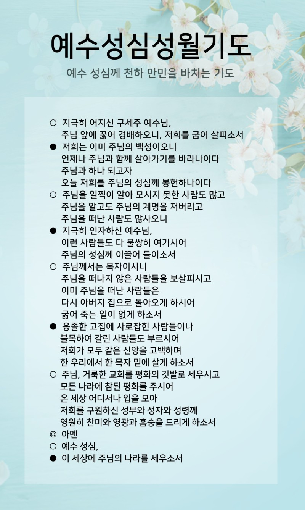
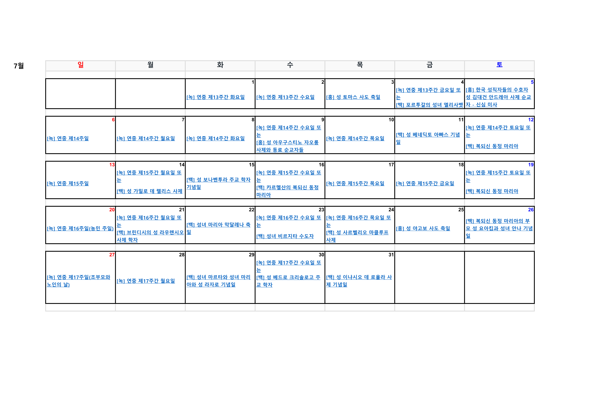
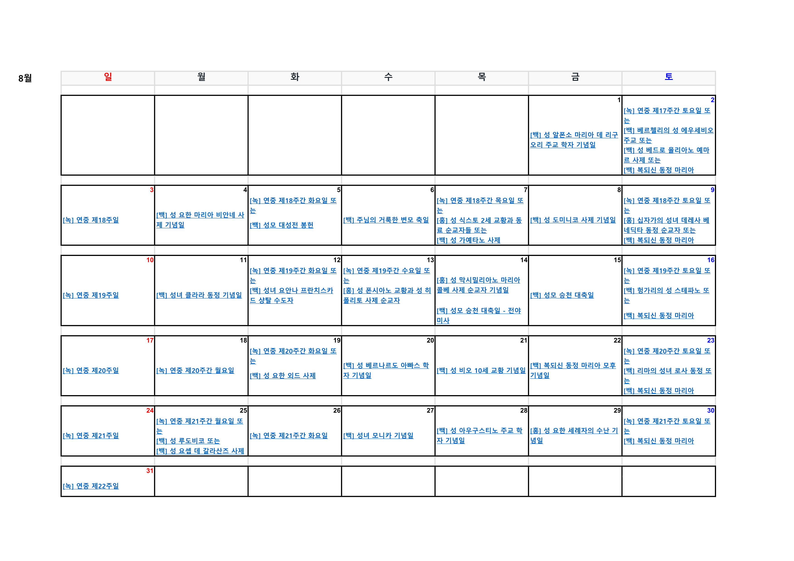

시작 기도(예수성심성월기)
신부님 전달사항
분과별 주요 진행사항 공유
5월 사목협의회 주요 결정사항
• 예비 신자 모집 진행 (입교식 5/11, 교리 시작 5/18, 현재 2명 접수)
• 성모의 밤 행사: 성전 진행, 꽃가마 미실시, 달란트 자발적 진행, 성가대 특송·연주·성모님께 드리는 글 포함
• 사목협의회 엠마오 일정(5/24~25) 확정, 차량 3대 운영, 식사 메뉴 톡으로 투표 예정
• 견진 교리 진행 준비 (6월 예정), 교육 전 성가 제안
• 야외 행사 시 15도 이하일 경우 성전으로 변경 기준 명확화
• 청소년분과: 청년 이사(5/25), 청소년 행사(5/11), 견진 교리(5/18 시작), 여름 캠프(8월 예정)
• 신심분과: 은혜의 밤 미사(5/30) 참석 독려
• 시설 내 자판기 처리 여부 검토 중 (위생·관리 이슈로 처분 검토)
6월 주요 일정
• 6/6(금) ~ 7/11(금) 매주 금요일: 견진교리 교육 (교육분과)
• 6/8(주일): 성령강림대축일, 성령칠은카드 준비 (전례분과)
• 6/10(화): 구역장회의, 전례분과 회의, 시니어아카데미 교구 월례교육
• 6/14(토): 구반장 월례회
• 6/17(화) ~ 6/25(수): 민족의 화해와 일치를 위한 9일 기도
• 6/20(금): 구반장 연수 (등촌1동성당)
• 6/27(금): 사제 성화의 날
• 6/29(주일): 주임신부님 영명축일 및 본당의 날
7월 주요 일정
• 7/4(금): 시니어아카데미 여름방학 시작
• 7/8(화) ~ 7/9(수): 시니어교사 여름연수 (1박 2일, 교구)
• 7/13(주일): 견진성사 (11시 미사, 주교님 식사 준비 포함)
8월 주요 일정
• 8/1(금) ~ 8/2(토): 주일학교 여름 캠프 (본당)
• 유치부/초등 저학년: 당일 물놀이 프로그램
• 초등 고학년: 1박 2일 프로그램
• 중고등부: 8/1(금) 저녁 바베큐 파티 ~ 익일 아침까지
마침기도(영광송)


